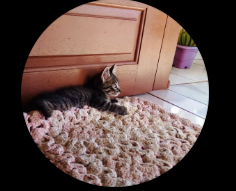
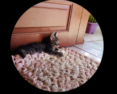

Para Você, Minha Quase Namorada 💖
Bem-vinda a este cantinho especial, feito com carinho só para você!
Ainda vai aumentar....

Bem-vinda a este cantinho especial, feito com carinho só para você!
Ainda vai aumentar....

 

"Desde o primeiro olhar, meu mundo ficou mais completo com você."
"Entre gatinhos e sorrisos, encontrei meu porto seguro em você."
"Você ilumina meu coração como nenhum outro pôde."
Um mural de memórias de nossos momentos juntos: